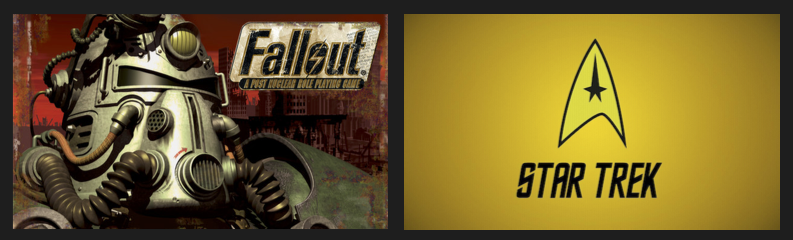

Regene DePiero
Boston Area · 307.761.9637 ·
regenedepiero@gmail.com
Independent and local artists need a way to increase new streams when a new single or album has been released. One way to do this is by exploiting Spotify's algorithm which recommends new artists and songs to users. It uses this information to recommend songs or artists to users based on how many other users have also associated those artists or songs together.
This tool takes a single track and creates a playlist based on the audio features of the given track. By a creating a playlist which includes their track(s) along with tracks by more popular artists in their genre, get people to listen to them, and increase the likelihood that they will be recommended to users also listening to those popular artists.
A description of the modeling process and code can be viewed in my Github repository.
A demo of the model can be seen here: Demo Application.
 Using a random forest classifier I created a model that can categorize subreddit posts as belonging to either the Fallout or Star Trek subreddits. A description of the modeling process and code can be viewed in my Github repository.
A demo of the model can be seen here: Subreddit Post Classifier.
Managed all aspects of virtual production. Trained internal and external producers on virtual recording and wrote documentation on processes. Managed virtual content for major annual event. Produced, recorded, and edited webinars. Designed and documented processes which lead to faster production turn around, advised on improved webinar design, leading to increased viewership. Designed, managed, documented, and trained producers on new scripting workshop process reducing scripting time on videos by 75\%.
Managed and recorded executives as on-screen talent for virtual events. Troubleshooted equipment and coached speakers on delivery and authenticity. Managed vendors, editors, and virtual production for multiple events and assisted with on-site video productions.
Created new resources used to promote an active learning environment rather than a traditional lecture course and implemented innovative learning strategies that resulted in a 91% pass rate.
Developed a new curriculum for a College Algebra course designed to support students lacking appropriate pre-requisite knowledge.Developed unique approaches in active learning and technical writing activities to push students beyond typical content acquisition.
Co-authored a textbook on scientific computing using Python, a lab manual for an intro to MATLAB course, and two sets of lecture notes. I Increased student use of Math Assistance Center by over 80% by implementing new solutions that changed core Assistance Center behaviors. Additionally, I designed 4 courses, including 2 distance learning math courses, a course integrating mathematics and political science, and a lab course teaching the basics of MATLAB and Python.
I am well-rounded nerd. I love to read and watch all things science fiction. My favorite authors include Kurt Vonnegut, Robert Heinlein, and Kim Stanley Robinson. I’ve watched plenty of the more mainstream sci-fi series like Star Trek and Battlestar Galactica, but also more obscure shows like Farscape. I also enjoy playing video games, mainly strategy games and RPGs, and have probably logged the most hours in the last few years playing games from the Fallout franchise.
I have also started tinkering with projects involving the Raspberry Pi and so far I’ve created a retro gaming system and am currently learning how to program with electronics.
My teaching portfolio can be viewed here.